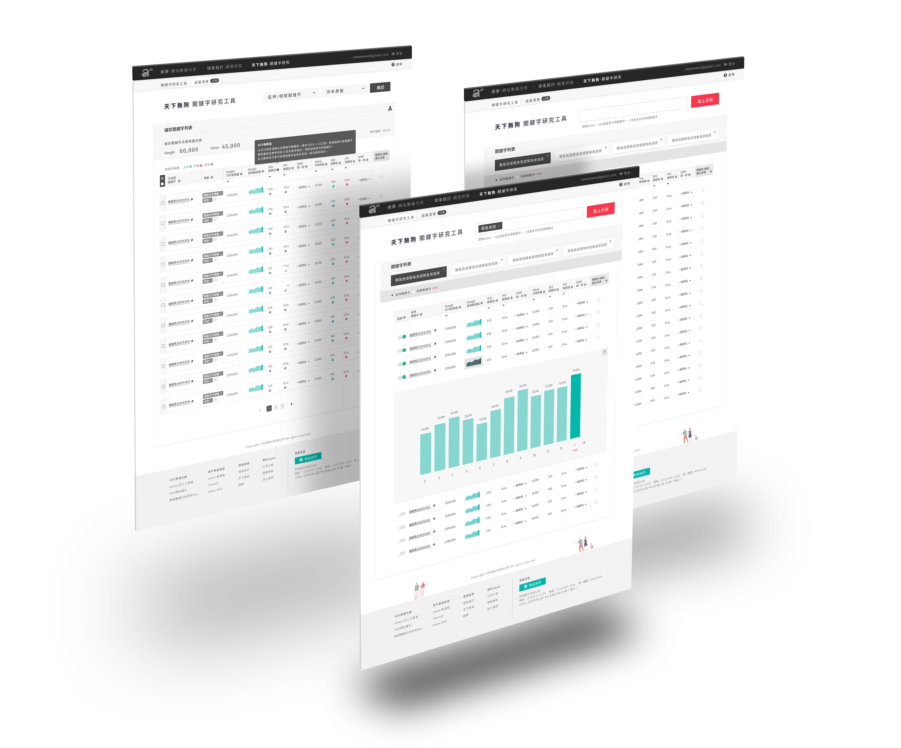
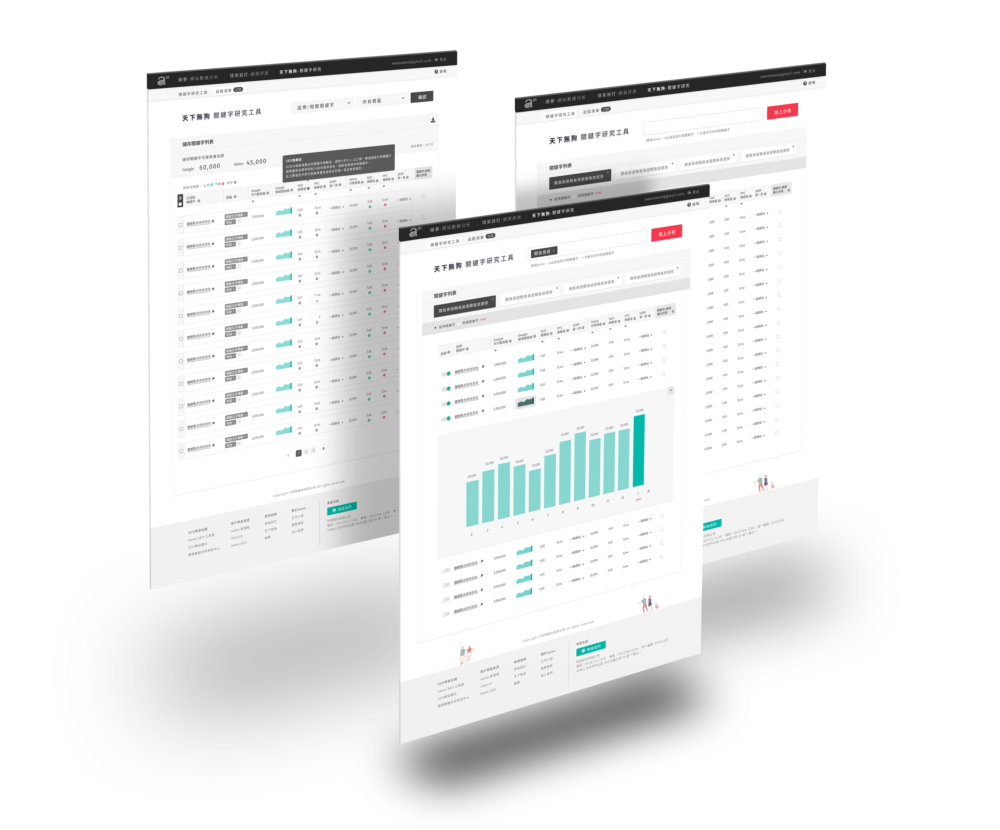
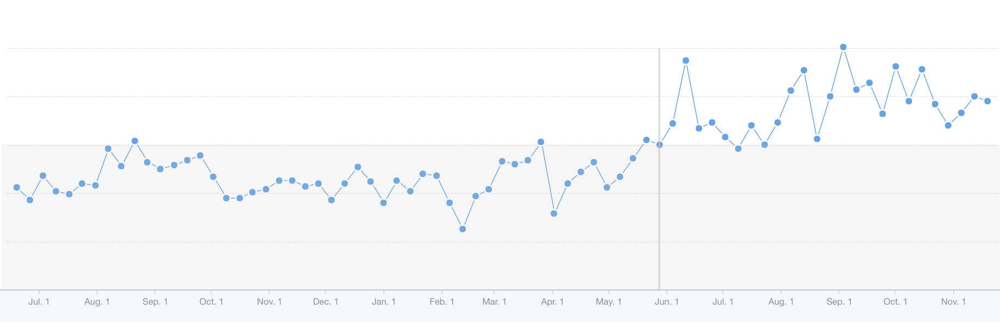

Defining Goals
Increase weekly active user
Increase weekly usage
Improve user retention rate
Assumption
Adding new functions as showing keyword search trend and providing related keywords could help increase weekly active user, weekly usage and retention rate.
UI/UX Design
 

Results
Increase number of weekly active user
The number of paid user increased 24.6%, free trial user increased 19.8% compare to previous month.
Increase weekly usage
The amount of usage grows 24.1% for paid user, and 70.4% for free trial user compare to previous month.
Improve user retention rate
Retention rate doesn't really improve
( Average number of weekly active user, from web analysis tool Mixpanel )
In conclusion, the number of user and the amount of usage are improved, yet the retention rate is not. This implies the new function we provided might not be able to motivate users to keep on using our product, they probably don't need the feature as frequent as we expected. However, the new function did help improve the overall usage of the product obviously. If we want to get higher retention rate, we should try some other ways.
Next Step
What else should we do to improve retention rate?
According to feedbacks from user, there are users who gave up using the tool because they don't know how to do SEO with our product. There are lack of onboarding process for now, so we assume adding onboarding design on interface and providing onboarding emails could help users keep on using our product.